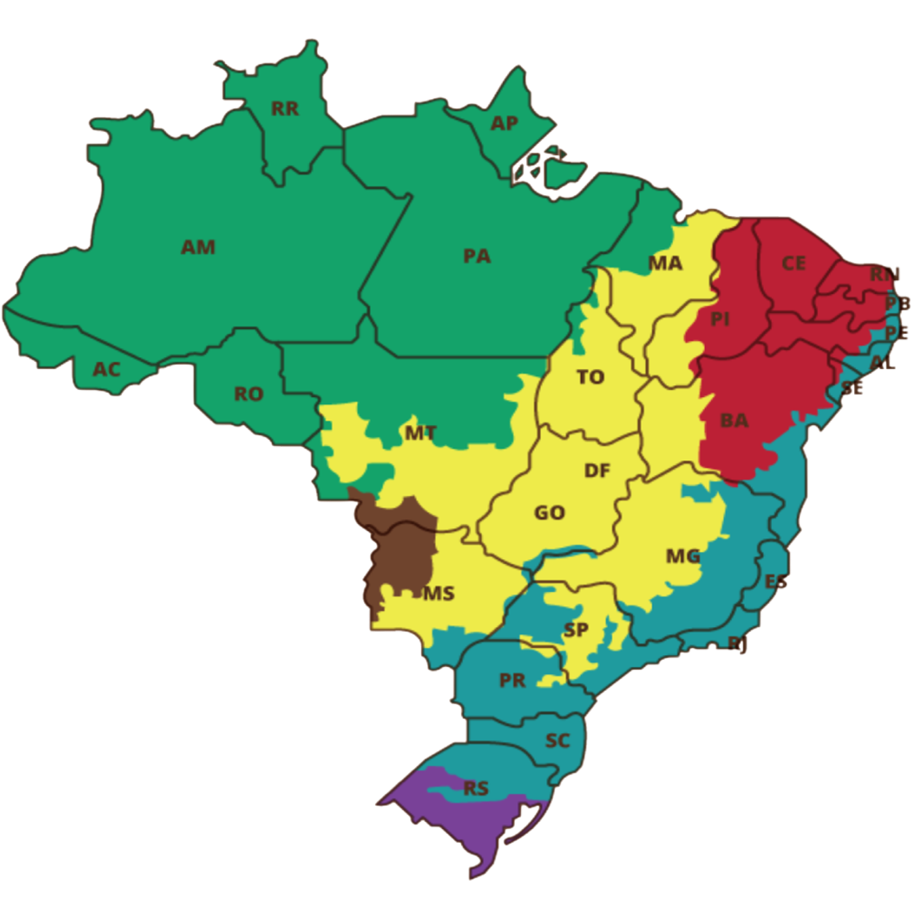

Os Produtos Florestais Não Madeireiros (PFNMs) são recursos extraídos de florestas e outros ecossistemas sem a necessidade do corte de árvores. Eles incluem frutas, sementes, óleos, resinas, plantas medicinais, fibras naturais, mel, entre outros. Exemplos conhecidos são o açaí, castanha-do-pará, pequi, copaíba, andiroba e licuri.
Esses produtos fazem parte do dia a dia de milhares de famílias indígenas, quilombolas e extrativistas que vivem em diferentes biomas do Brasil — da Amazônia à Caatinga, do Cerrado ao Pantanal. Eles não só garantem a subsistência dessas comunidades como também representam uma rica herança de práticas sustentáveis e respeito à natureza.
Apesar do valor ecológico, econômico e cultural dos PFNMs, a maior parte da sua cadeia produtiva ainda é informal. Muitas comunidades dependem de atravessadores para comercializar seus produtos, o que muitas vezes resulta em exploração, desvalorização e perda de autonomia.
| PFNM | Bioma | Região | Principais Estados |
|---|---|---|
| Açai | Amazônia | PA, AM e AP |
| Castanhas-do-Brasil | Amazônia | AC, AM e PA |
| Pequi | Cerrado | GO, MG e TO |
| Umbu | Caatinga | BA, PE e SE |
| Palmito Juçara | Mata Atlântica | SP, PR e SC |
| Babaçu | Mata dos Cocais (MA/TO) | MA, PI e TO |

Mapa do Brasil distribuído por biomas e seus respectivos estados
@novaescola.org.br
Amazônia
Cerrado
Mata Atlântica
Caatinga
Pampa
Pantanal
Os povos indígenas possuem uma conexão profunda e ancestral com os biomas onde vivem. Essa relação vai muito além da sobrevivência: envolve respeito, cuidado e conhecimento transmitido de geração em geração.
Cada bioma brasileiro — como a Amazônia, o Cerrado, a Caatinga e a Mata Atlântica — abriga uma diversidade única de espécies vegetais e animais. Dentro desses ambientes, os povos indígenas extraem e cultivam Produtos Florestais Não Madeireiros (PFNMs) como frutas, sementes, óleos e resinas, de forma sustentável e sem destruir a floresta.
PFNMs como o açaí, a castanha-do-pará, o pequi e o licuri fazem parte da vida diária dessas comunidades, não apenas como fonte de alimento, mas também como base econômica e cultural. A coleta e o uso desses produtos respeitam os ciclos naturais e mantêm o equilíbrio ecológico dos territórios.
Essa forma de viver e produzir mostra que é possível gerar renda e preservar a natureza ao mesmo tempo — um exemplo valioso de sustentabilidade que o mundo moderno tem muito a aprender.